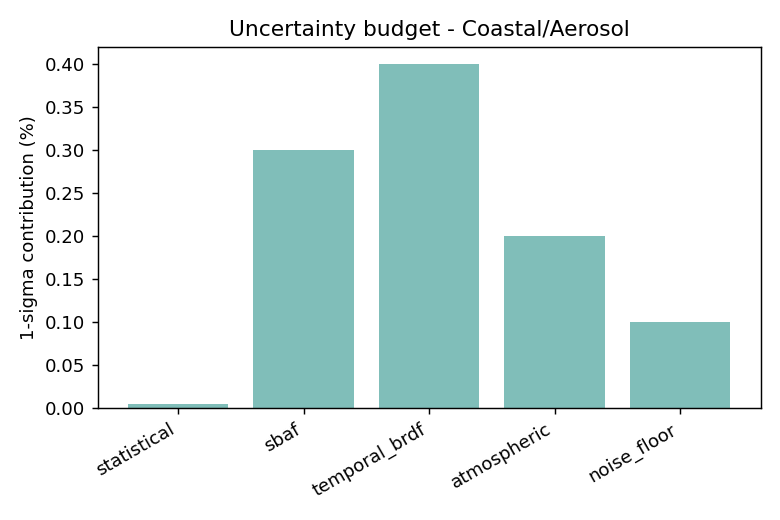
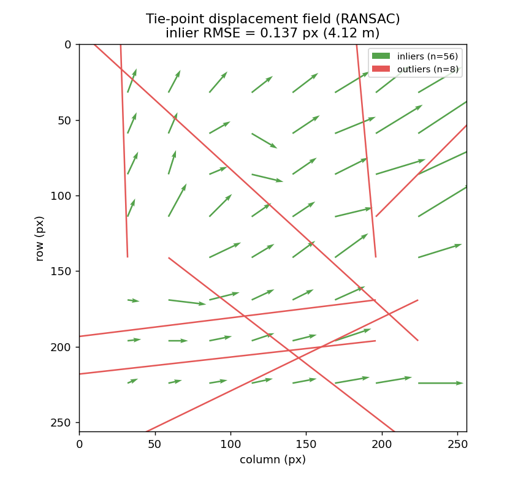

Landsat 8 and 9 fly the same orbit eight days apart, so over a stable desert calibration site they see nearly the same scene under nearly the same geometry: a clean natural experiment for comparing two sensors. This project reproduces, in miniature, the cross-calibration methodology I built for NASA's passive-microwave constellation, and applies it to optical and thermal imagery.
What it does
- Pairs scenes: finds near-coincident L8/L9 acquisitions over a CEOS pseudo-invariant site (Libya-4 by default).
- Radiometric comparison: per-band reflectance ratio for the OLI bands and brightness-temperature difference for the thermal (TIRS) bands, after a spectral band adjustment so the remaining difference is radiometric, not spectral.
- Uncertainty budget: statistical, spectral-adjustment, temporal/BRDF, atmospheric and noise-floor terms combined in quadrature, reported at k=1 and k=2, with a significance flag per band.
- Geometric registration: sub-pixel phase correlation for the global offset, plus a tie-point network with a RANSAC affine fit that flags cloud- and smoke-contaminated patches as outliers.

Validation before real data
The science code is decoupled from the data source. A Google Earth Engine backend pulls real Landsat Collection-2 data; a synthetic backend injects a known bias and sub-pixel shift, and a pytest suite checks the pipeline recovers them:
| Quantity | Injected | Recovered |
|---|---|---|
| Red-band bias | +0.353% | +0.355% |
| TIRS-1 bias | −0.188 K | −0.190 K |
| Geometric shift (dy, dx) | (+0.35, −0.20) px | (+0.32, −0.18) px |
The figures on this page come from that synthetic backend; they show the method works, not what the real sensors do. Real-scene runs are in progress.

Why it matters for ML work
Any model trained on one sensor and applied to another inherits their calibration difference as a silent distribution shift. This is the check that tells you whether two data sources can be pooled, with an explicit uncertainty rather than an assumption.